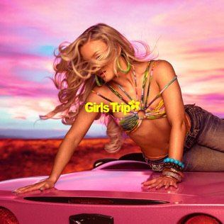
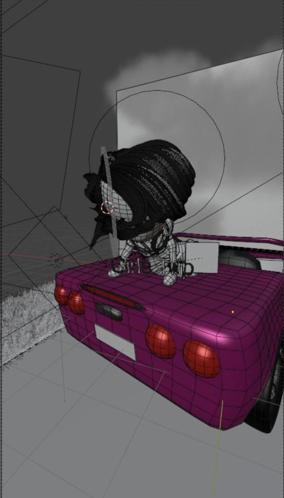
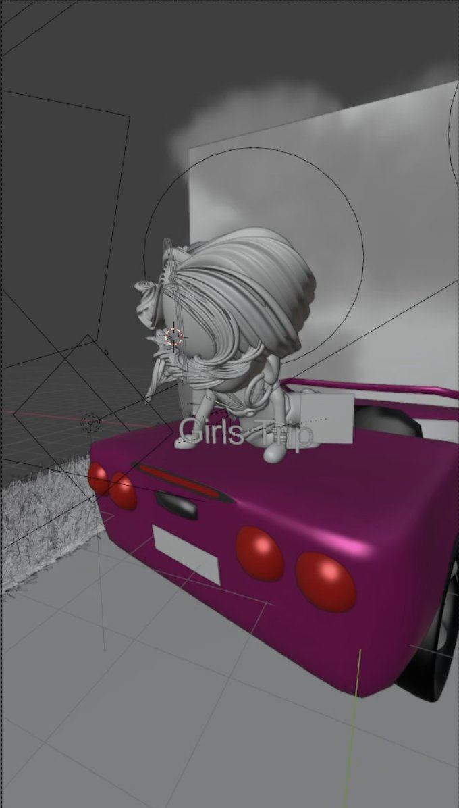
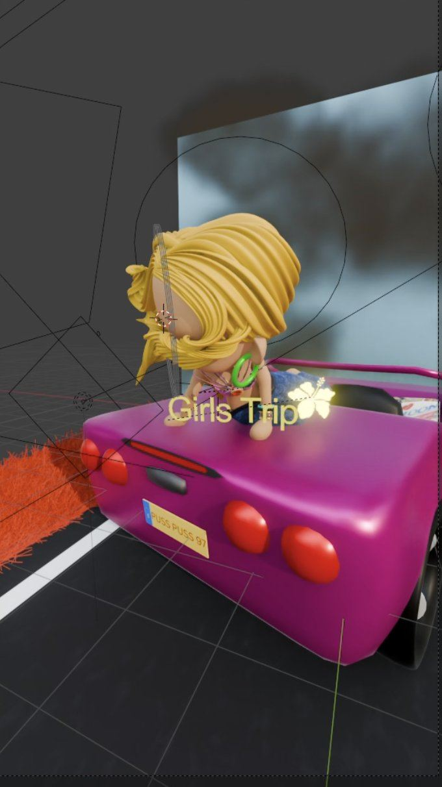

Girls Trip
Zara Larsson's album cover, rebuilt as a miniature 3D scene in Blender.
The idea
I turned Zara Larsson's album cover for Midnight Sun: Girls Trip into a tiny 3D world. The goal was to keep the mood of the photo, the pink sky, the sports car and the wind in her hair, but make it cute, round and toy-like, like a collectible figure.
It is the first piece in my series of miniature pop star scenes, made as short vertical videos for Instagram and TikTok.
My role
- Modeled and sculpted the chibi character, hair, outfit and accessories
- Modeled the pink convertible with its tail lights and license plate
- Built the scene, lighting and the pink and purple color palette
- Animated the camera for a short vertical video
- Type
- 3D album cover recreation, fan art
- Software
- Blender
- Format
- Vertical video for social media
- My role
- Solo project
From cover to 3D
The original album cover, then my wireframe, clay model and final materials.




Fan art. The album and cover belong to Zara Larsson and her label.
More work: 3D & Animation, VFX, Film & Content